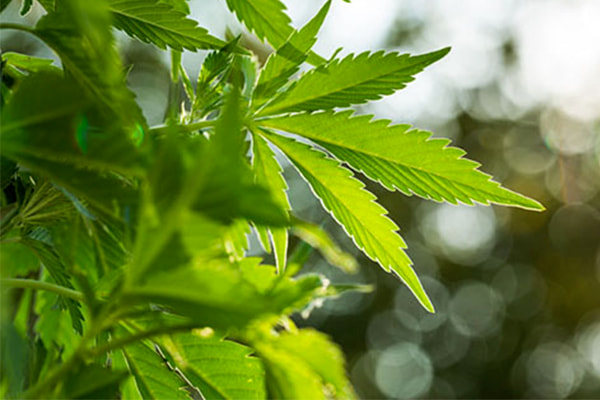

Cannabis, hemp, buds, and Devil’s lettuce are some of the words used for marijuana.At most, many countries and cities allow legalized cannabis for medicinal use, while some countries allow it for recreational use. However, the decision in America is left to our local state governments. The legalization of cannabis has been a subject of ongoing debate in politics, but for lawmakers, it is significant. Therefore, if a bill were to go through Congress right now, national legalization most likely would not pass. Since alcohol and tobacco laws in the US are generally legalized on a national level, cannabis should also be nationally legalized because it is much safer than alcohol and tobacco, offers multiple health benefits, and generates economic growth.
The use of alcohol and tobacco can lead to significant health risks. There is simply no doubt that drinking alcohol in America is an American tradition. This does not necessarily mean it is good. Smoking tobacco dates back to the time when the United States colonized North America, and the Native Americans introduced tobacco. Despite the historical context and importance of American culture, alcohol and cigarettes causes far worse dangers than individual cannabis use. Alcohol is a depressant, yet its effects depend on how much one drinks. WebMD, an American corporation known primarily online for news and information pertaining to human health and well-being, writes about alcohol in the article, “How Alcohol Affects Your Body.” The article explains that “Alcohol races into your brain. It slows down the chemicals and pathways that your brain cells use to send messages. That alters your mood, slows your reflexes, and throws off your balance.” Alcohol impairs the equilibrium of people and their eyesight, and it adversely affects the attitudes of drinkers by making them much less competent in their actions (WebMD).
Like alcohol, smoking has negative effects like alcohol. When a person smokes a cigarette for the first time, the chemicals start to build up in the lungs and become life-threatening. In the article "What's In a Cigarette?" The American Lung Association, a voluntary health organization whose mission is to save lives by improving lung health and preventing lung disease through education, advocacy, and research, claims that “cigarettes create more than 7,000 chemicals. At least 69 of these chemicals are known to cause cancer, and many are toxic.” By destroying the cells that line the lungs, smoking triggers lung cancer. Changes in lung tissue begin almost instantly when a person inhales cigarette smoke which is full of cancer-causing substances known as carcinogens. The body can heal some of the initial damage; however, normal cells that line the lungs are progressively weakened with each repeated chemical exposure. Over time, the damage causes cells to behave abnormally, and cancer may develop eventually (Association). Alcohol and tobacco have serious health consequences.
In contrast, cannabis has been shown to have far less health risk than alcohol and tobacco. An experiment was conducted to determine which suggest substance, alcohol, tobacco, or cannabis substance have the highest and lowest risk. Dirk W. Lachenmeier, a food chemist and toxicologist and Jürgen Rehm, a senior scientist, write about these substances in the article, “Comparative Risk Assessment of alcohol, tobacco, cannabis and other illicit drugs using the margin of exposure approach.” They claim that “The toxicological MOE approach validates epidemiological and social science-based drug ranking approaches especially in regard to the positions of alcohol and tobacco (high risk) and cannabis (low risk).” For certain types of cancer, especially those of the mouth and throat, people who drink and smoke are at higher risk.Around eighty percent of mouth and throat cancer cases in men and about sixty-five percent in women are caused by alcohol and tobacco. The risk of mouth and throat cancer rises significantly for people who both smoke and drink. In fact, the combined risk is greater than or equal to the risk associated with alcohol compounded by the risk associated with tobacco. Co-use of alcohol and tobacco appears to significantly increase the risk of at least one form of cancer. As such, no connection exists to link marijuana with cancer. However, the use of marijuana has an effect on the developing brain. This fact speaks for itself, especially as no one has died due to cannabis exposure (Lachenmeier & Rehm, p. 1). Alcohol and tobacco elevates more the risk than marijuana, and this argument needs to be taken into account when it comes to national legalization.
Also, Smoking cannabis can provide numerous health benefits, even on a very small scale. Cannabis smokers also undergo beneficial physical reactions from smoking cannabis, and they are effective most of the time. Cannabis results include a better overall feeling, cramp suppression, reduced anxiety and depression, and suppression of cancer cells. A report by The National Academies of Sciences, the collective scientific national academy of the United States,provides data from a study by multiple health and social science scientists that found “the most common conditions for which medical cannabis is used in Colorado and Oregon are pain, spasticity associated with multiple sclerosis, nausea, posttraumatic stress disorder, cancer, epilepsy, cachexia, glaucoma, HIV/AIDS, and degenerative neurological conditions." The active chemicals in medical marijuana are comparable to chemicals that are involved in appetite, memory, motion, and pain created by the body. It mixes with the other chemicals to help reduce pain or address any other medical conditions without harming the body because the same chemical is found in cannabis (Sciences). The report also stated that “In adults with chronic pain,patients who were treated with cannabis or cannabinoids are more likely to experience a clinically significant reduction in pain symptoms.” While a variety of health conditions and symptoms can be treated with medical cannabis, it is most commonly prescribed to alleviate chronic pain. Tetrahydrocannabinol and Cannabidiol both offer effective pain relief and can be a better option than traditional medicine These positive effects are very necessary, and doctors want to use them for all patients with these diseases, as long as medicinal cannabis use is legal in all states (Sciences).
In addition to aiding patients, legal cannabis has produces economic effects that are beneficial to the sellers and the state. Leafly cannabis web store report from Professional Services Close-Up, writes about drugs in the article, “Leafly Report: Legal Cannabis Industry Now Supports 321,000 Full-Time American Jobs” reported that “California remains the nation's leader in cannabis jobs, with 57,970 full-time equivalent jobs and more than $3.77 billion in cannabis sales in 2020.” Marked by the COVID-19 pandemic in the year 2020, in California, the cannabis industry was a bright spot of development and potential. Cannabis-related enterprises, which were declared critical businesses by the state early in the pandemic, not only created 57,970 new full-time equivalent jobs but also drove a record-high $3.8 billion in cannabis retail revenues in 2020, a 20 percent raise over 2019 (Close-Up). As the figures reveal, the economic advantages of legal cannabis are very real. It is then possible to use the money for the states for a vast majority of development improvements; ranging from building the economy to feeding the homeless.
Those who oppose the national legalization of Cannabis present. Many people object for moral reason. Others are against cannabis because they realize the risks of smoking. As a significant result, opponents often point to a rise in road crash fatalities. Wayne Hall, Inauguralprofessor and director of the Centre for Youth Substance Abuse Research and Michael Lynskey, a New Zealand academic and psychiatrist describes about car crashes in the article, “Evaluating the public health impacts of legalizing recreational cannabis use in the United States.” They point out that, “found a larger increase in cannabis positive fatalities in Colorado after 2009 than in the 34 states without MMLs.” It explained that young males substituting cannabis for alcohol because cannabis was cheaper in MML states caused an increase in car crashes (Hall & Lynskey, p. 1767).
On the one hand, there are those who agree with Wayne Hall and Michael Lynskey that cannabis can cause car accidents. But on the other hand, they still insist that cannabis does not increase car accidents. Richard P. Compton, a director of the Office of Behavioral Safety Research at the National Highway Traffic Safety Administration, U.S. Department of Transportation, and Amy Barning, a research psychologist with the National Highway Traffic Safety Administration cite Eduardo Romano, Senior Scientist at Pacific Institute for Research and Evaluation, article “Drug and Alcohol Crash Risk” when they write “study found no increased risk of crash involvementfor those drivers testing positive for THC (the main psychoactive substance in marijuana).” The accident involved, drug-positive drivers and drug-negative drivers. They are known to have been at fault for their collisions.Case-control drivers have differed greatly in an impartial manner for the drivers involved in the collision. More closely monitored research actually measure the usage of marijuana (Tetrahydrocannabinol) rather than relying on self-reporting, and had more effective control of covariates result in bias.The findings typically indicate reduced risk estimates or no risk associated with marijuana use (Compton & Berning, p. 1).It is basically a strategy the bunking anybody's marijuana is a dangerous argument.
Cannabis should be legalized nationwide because it is much safer than alcohol and tobacco provides numerous health benefits and stimulates economic growth. Unlike drinking alcohol and smoking cigarettes, the facts show that cannabis can give people who use it so many advantages and it does not even affect the health of those who choose not to use it. For people battling with and suffering from chronic illnesses, the medical effects of marijuana can be so beneficial, offering them hope and relief. To those people who hardworking and the motivated, legalizing cannabis would create the opportunity to live better life. The cannabis industry raises a substantial 20 percent in a year. To opponents of legalizing cannabis use, marijuana does not cause car accidents.Although many people object for moral reasons to try to prove that it’s bad using science, their arguments are fairly easy to prove wrong. In the future legalizing cannabis can help those who don’t have a job by giving them a job, and treat many serious medical conditions like cramp suppression, reduced anxiety and depression, and suppression of cancer cells.
Email : shahedahmed244@yahoo.com